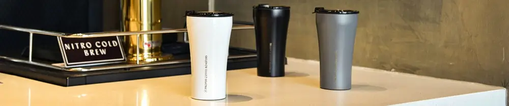

Review & Uji Chako Lab Lin-Lin Kettle: Tumbler Tahan Suhu dengan Kemampuan Menjaga Dingin Selama Berjam-jam
Dipublikasikan pada 13 Agustus 2025

Saat ini, tumbler yang mampu menjaga suhu minuman menjadi barang yang sangat populer. Berbagai merek, kapasitas, dan rentang harga ditawarkan di pasaran, baik online maupun offline. Apa sebenarnya keistimewaan dari tumbler ini? Mari kita ulas bersama.
Tim Mas Tukang mencoba tumbler LinLin Kettle dari ChakoLab dengan kapasitas 1 liter. Tumbler ini dibanderol dengan harga sekitar Rp 500.000. Saat dibuka, paketnya berisi buku manual dan tumbler itu sendiri, lengkap dengan sedotan silikon yang lentur dan berfungsi seperti pegas.
Cara Kerja dan Uji Ketahanan Suhu Tumbler
Tumbler ini dirancang dengan teknologi sekat suhu, berkat adanya warna perak dan ruang vakum di antara dinding-dindingnya. Desain ini memungkinkan suhu minuman tetap awet, baik dingin maupun hangat, saat dibawa bepergian. Tapi, seberapa kuat kemampuan tumbler ini? Mari kita uji.
- Pada pukul 13.30: kami menuangkan air dingin dari kulkas dan menambahkan sekitar 180 ml es batu hingga penuh. Tumbler dikocok sebentar, ditutup rapat, dan dibiarkan di suhu ruang yang saat itu cukup panas, yaitu 31-33°C.
- Pukul 15.45: Setelah lebih dari 2 jam, es batu masih terlihat, meski ukurannya sudah mengecil sekitar 40% dari volume awal. Yang menarik, suhu dinding luar tumbler sama sekali tidak terasa dingin, menandakan bahwa sekat suhu bekerja dengan sangat baik.
- Pukul 17.50: Saat magrib, es batu masih ada, meskipun ukurannya sudah sangat kecil, seukuran jempol tangan.
- Pukul 09.00 keesokan harinya: Ketika dibuka, es batu sudah mencair seluruhnya. Namun, air di dalam tumbler masih terasa dingin dan segar. Sebagai bukti, saat air dituangkan ke dalam gelas, embun masih terlihat di dinding luar gelas.
Kesimpulan: Tumbler yang Tahan Lama untuk Menjaga Minuman Anda
Dari hasil uji coba ini, dapat disimpulkan bahwa tumbler tahan suhu ini memang mampu menjaga minuman tetap dingin dalam waktu yang sangat panjang, bahkan lebih dari 12 jam. Ini menjadikannya pilihan ideal untuk Anda yang sering beraktivitas di luar rumah.
Video tentang ulasan kemampuan tumbler ini dalam menjaga suhu minuman dapat ditonton di bawah ini. Semoga bermanfaat!